The World of RoboticsExplore the latwst advancement in robotics and how they are shaping industies and society |
The field of robotics encompasses the design, construction, operation, and use of robots—machines that can perform tasks autonomously or semi-autonomously. Robotics is a multidisciplinary domain that integrates various fields such as engineering, computer science, artificial intelligence (AI), and mechatronics. As technology advances, robotics continues to reshape industries, enhance daily living, and drive innovation.
History of Robotics The history of robotics dates back to ancient times, with myths and legends featuring automata. However, the modern field began in the 20th century. Key milestones include:
| 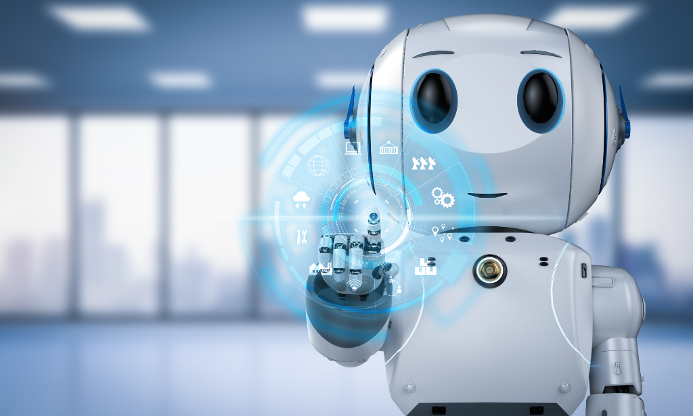 | 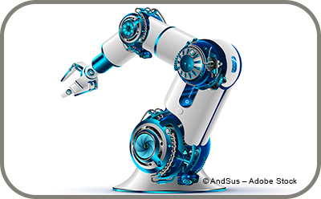 | 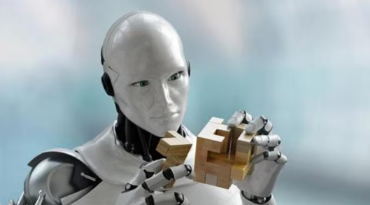 | 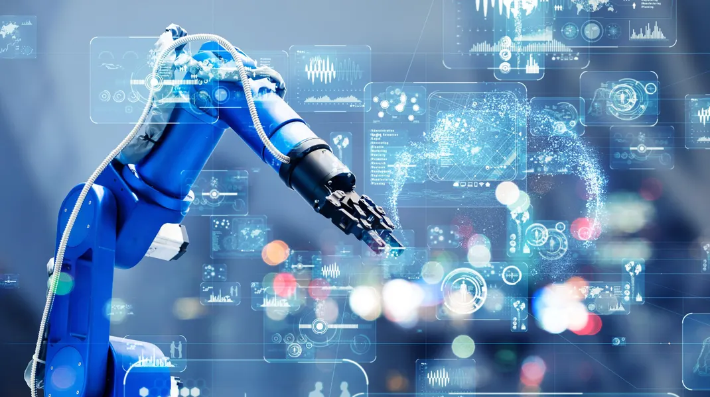 |
The industrial landscape has been significantly transformed by advancements in robotics and automation. Robots are now integral to manufacturing processes, enhancing productivity, efficiency, and precision. This transformation, driven by technological innovations, has reshaped industries ranging from automotive to electronics, food production to pharmaceuticals.
| 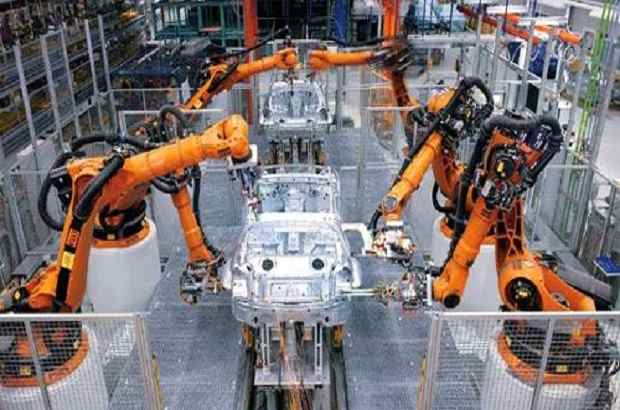 | 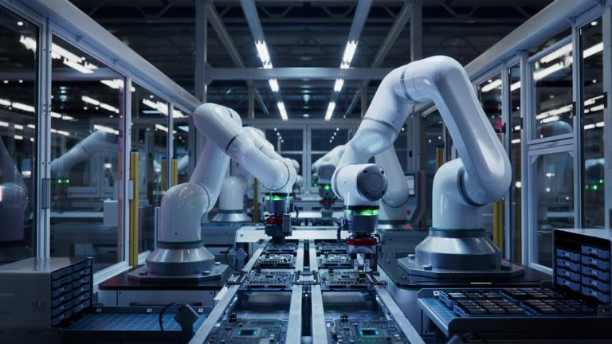 | 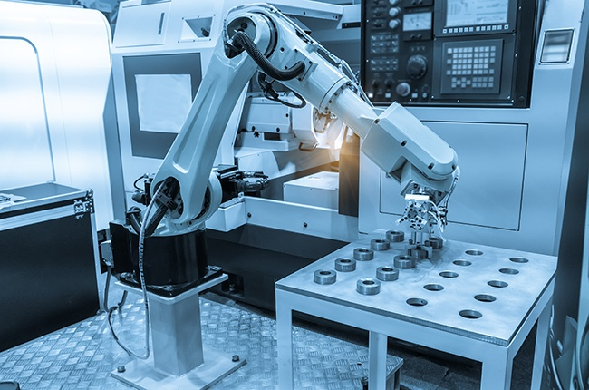 | 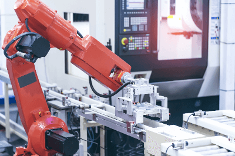 |
Humanoid robots, designed to mimic the appearance and behavior of humans, represent one of the most exciting areas in robotics and artificial intelligence. These robots have gained significant attention not only for their innovative designs but also for their potential applications across various sectors, from healthcare to entertainment. As technology advances, humanoid robots are evolving to possess increasingly sophisticated capabilities, enabling them to interact with the world and humans in more meaningful ways.
Humanoid robots are robots that resemble humans in shape, behavior, and capabilities. They typically have a torso, a head, two arms, and two legs, allowing them to perform tasks in a manner similar to humans. Their design often includes features such as facial expressions, speech recognition, and the ability to move and manipulate objects. The primary goal of humanoid robots is to improve human-robot interaction by making them more relatable and approachable.
| 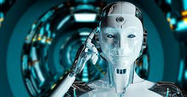 | 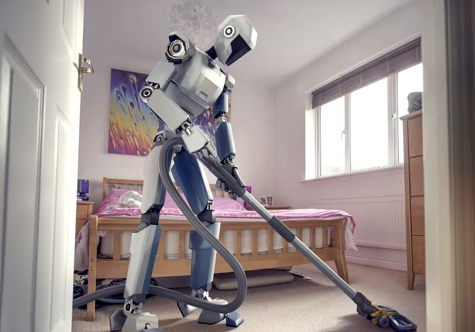 | 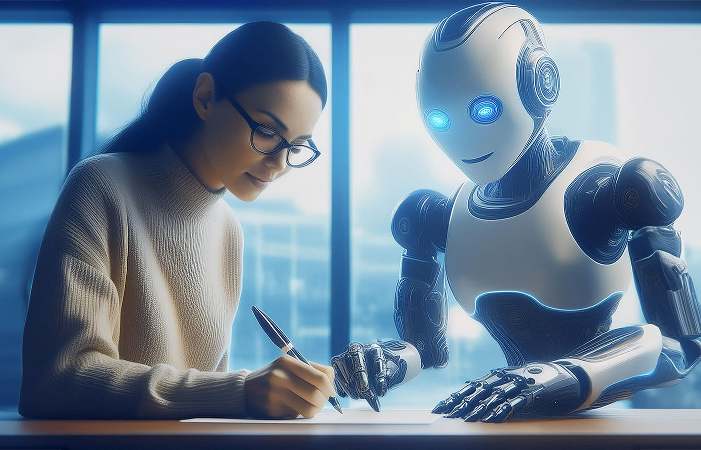 | 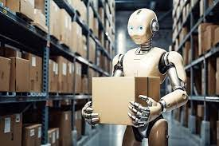 |
Humanoid robot interacting withpeople
| Category | Description | Key Example |
| bIndustrial Robots | Robots that automate industrial tasks like welding,assembiling and packaging | Robotic Arm |
| Humanoid Robots | Robots design to mimic human behavior and interact with humans | Sophia |
| Automomous Robots | Robots capable of performing tasks with little to no human intervention. | Self-Driving Car |
| Exploratory Robots | Robots used in space exploration and deep-sea research | Rover |
Robots have become an integral part of modern society, transforming various sectors such as manufacturing, healthcare, and service industries. Their ability to perform repetitive, complex, and dangerous tasks has not only enhanced efficiency and productivity but has also improved safety for human workers. As advancements in artificial intelligence, machine learning, and robotics technology continue to evolve, the capabilities of robots are expanding, allowing them to interact more naturally with humans and adapt to dynamic environments.